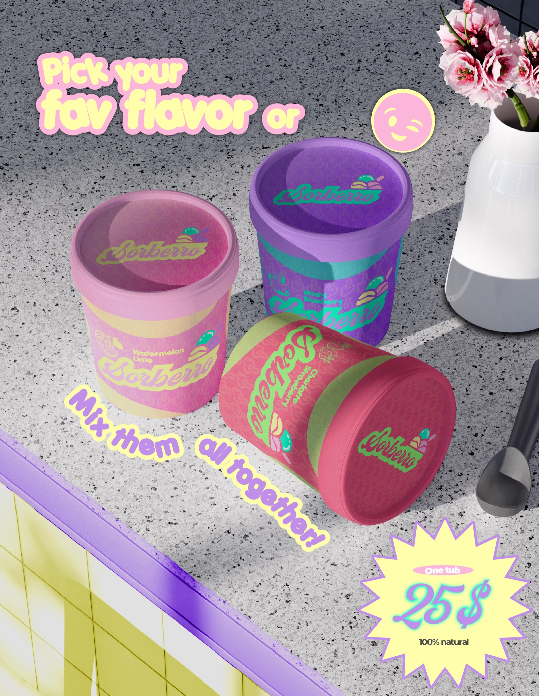
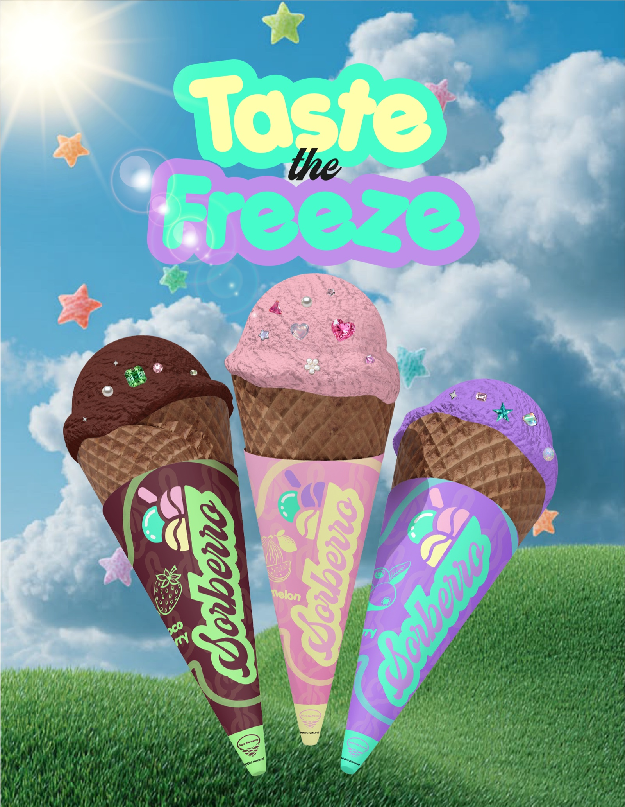

01
Sorbets Artisanaux · Sorberro
« Taste the Freeze » — Sorberro réinvente l'univers des glaces artisanales nomades à travers une ligne de packaging fraîche, gourmande et pop aux teintes pastel (« Fresh fruit, real mint & pure chill »).
Conception d'une gamme complète d'emballages éco-conçus et vibrants : étuis coniques protecteurs pour gaufrettes illustrés selon les 3 parfums signatures (framboise-menthe, mangue glacée, citron givré), pots de sorbet hermétiques grand format aux étiquettes vitaminées, tote bags en toile sérigraphiée et déclinaisons de contenants adaptés à la vente ambulante et aux festivals estivaux.
- Contexte
- Glacier Artisanal & Food Truck / Concept Brand
- Livrables
- Pots de Sorbet, Étuis Coniques, Tote Bag & Merchandising
- Outils



